Growth-coupled sensitivity to TMG during transient growth arrest
Thomas Julou
February, 2025
In this notebook, we analyse the growth-coupled sensitivity of the lac operon of E. coli to TMG, in the presence or not of a transient growth arrest.
Controls
Distribution of growth rate in the initial condition.
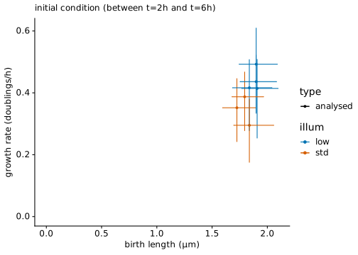
Position effect in the growth lane on induction lag: cells closer to the closed end tend to induce later, in particular for the slower inducing subpopulation. Since lactulose is expected to be in large excess, this raises the question whether TMG can be titrated by the first cells close to the GL opening… Note that this effect is not critical for our analysis as we focus on the comparison of induction outcome between glycerol and lactulose rather than on its dynamics.
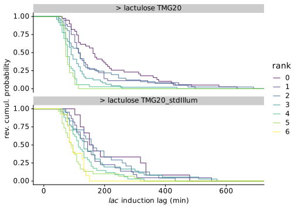
Decoupling growth and induction
In order to compare induction at a given inducer concentration in growing and arrested cells, we use lactulose. E. coli can metabolize lactulose when it expresses LacY and LacZ but lactulose is reported not to be an inhibitor of LacI. Hence an mixture of lactulose and TMG can be used to recapitulate the phenomenology of the induction by lactose where cells transiently stop growing (although at the concentration of nutrient and inducer can be decoupled).
The fraction of induced cells has been reported to increase abruptly with the (log of the) TMG concentration. We identify the upper range of TMG concentrations that are low enough that no cell induce after 5h when growing on glycerol. xxx We predict that this concentration of TMG will be high enough for cells to induce and resume growth when switched to TMG and lactulose, since cells cannot use lactulose after the switch and are forced to transiently stop growing.
First let’s look at some raw length traces, coloured using an arbitrary fluorescence concentration threshold (to visualise cells expressing LacZ-GFP at detectable levels). It reveals that some cells can grow on lactulose without TMG (and even sometimes express LacZ-GFP weakly); however, when exposed to lactulose and TMG cells express more LacZ-GFP and grow faster. The sustained growth on lactulose without TMG can be due to nutrients traces in lactulose (in particular galactose) or to undocumented induction by lactulose (e.g. if glycerol is present in the cytoplasm, galactosyl-glycerol will be produced by LacZ similarly to allolactose synthesis).
This constitutes a confounding effect since we need to distinguish the inducing effect of the TMG from the weak spontaneous induction observed in lactulose only.
In addition, after comparing the induction by TMG in cells growing on glycerol or lactulose using our default imaging protocol (using a 2x lower acquisition frequency, condition named “stdIllum”), we noticed that an unexpectedly high fraction of cells stopped growing and didn’t induce in lactulose+TMG. We hypothesized that growth arrested cells were more sensitive to phototoxicity and repeated the experiments by reducing 5× the fluorescence illumination during the lactulose episode and switching cells back to glycerol in order to check whether arrested cells (if any) are still viable.

By increasing the induction threshold (+1000 LacZ-GFP molecules instead of +200 by default; picked according to raw traces), it is possible to measure induction lags specific for TMG in lactulose. These distributions indicate a large fraction of non inducing cells (see below for a more detailed analysis). Noticeably, using a lower induction threshold, an induction lag can be measured for more cells but at the cost of observing more cells induced by lactulose only (hence the induction lag doesn’t correspond to the TMG specific induction anymore).
Importantly, the distribution of induction lags is not truncated and indicates that all induction has already taken place after 7h. In further analysis, we will compare LacZ-GFP level and instantaneous growth rate at this time.
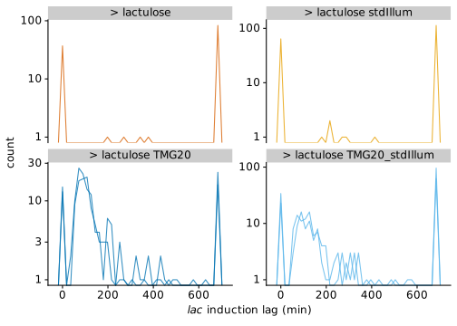
Growth arrest and LacZ-GFP expression after the lag
Since length traces have more complex shapes than for the switch to lactose, it is not possible to fit a model corresponding to no growth followed by linear increase. Instead we compare the instantaneous growth rate (computed using 3 time points for each data point) in windows of 1h before and after the switch.
This plot reveals that, while there is sustained growth and no induction in glycerol, bacteria exposed to 20µM TMG with lactulose will in majority express their lac operon and resume growth.
In order to focus on the effect induced by TMG, one uses thresholds for growth and induction which are at the upper ends of their distribution in lactulose without TMG: 250 GFP/µm for induction, and 0.1 dbl/h for growth.
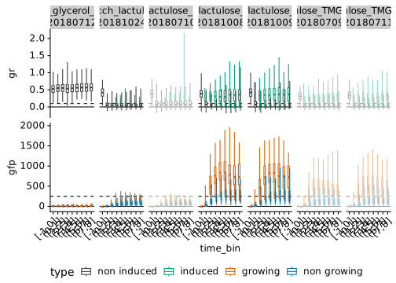
When focusing on 7-8h after the switch (i.e. after all inducible cells have switched on), three expression states can be distinguished in the distributions of LacZ-GFP concentration:
- uninduced (before the switch or with glycerol; <100 molecules/µm)
- weak spontaneous induction due to lactulose (between 100 and 250 molecules)
- induction due to TMG in lactulose (>250 molecules/µm)
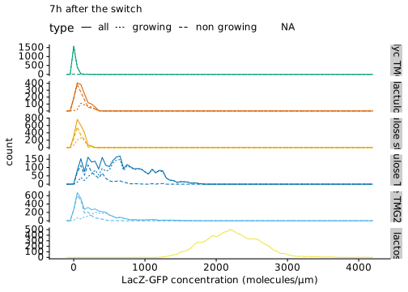
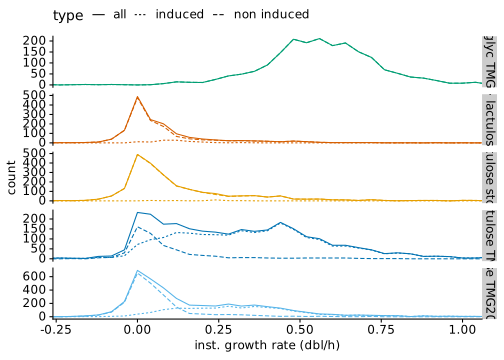
## # A tibble: 5 × 4
## condition n n_induced p_induced
## <chr> <int> <int> <dbl>
## 1 switch_glycerol_TMG20 2019 0 0
## 2 switch_lactulose 1508 109 0.0723
## 3 switch_lactulose_stdIllum 2206 23 0.0104
## 4 switch_lactulose_TMG20 2894 2335 0.807
## 5 switch_lactulose_TMG20_stdIllum 4046 1835 0.454Since lactulose is not an inducer of the lac operon, the quantity of catabolic Lac enzymes is limiting growth at low TMG concentration. As a result, the instantaneous growth rate depends strongly on the LacZ-GFP concentration.
NB: not all data is shown.
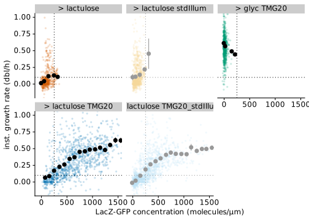
Summary
For the manuscript, we focus on low illumination data.
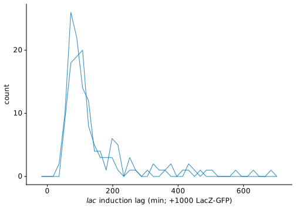
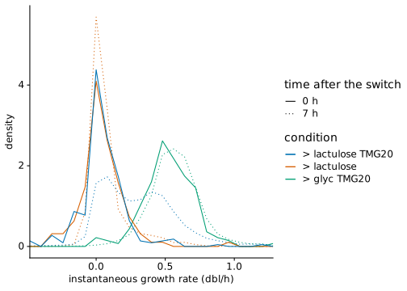
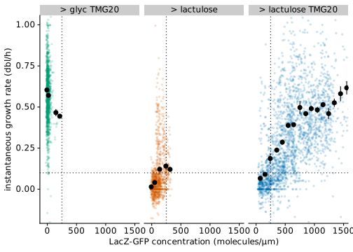
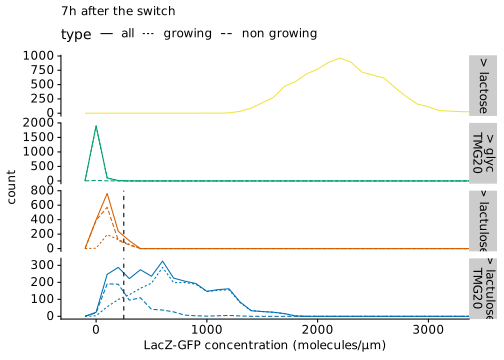
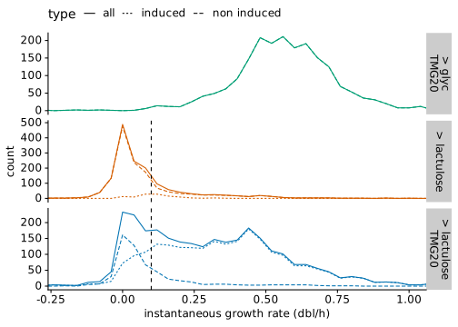
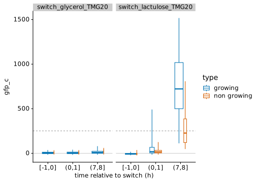
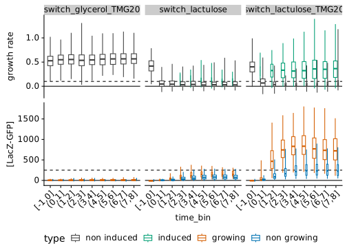